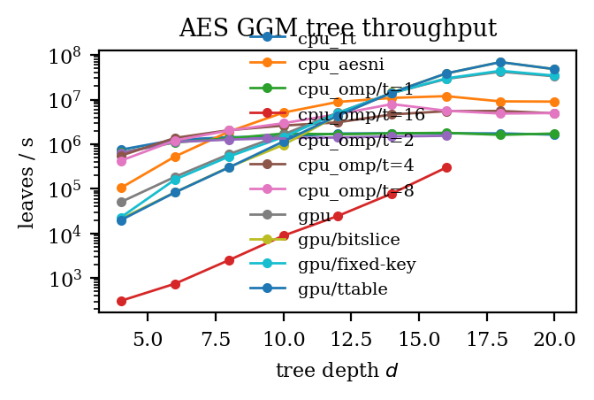
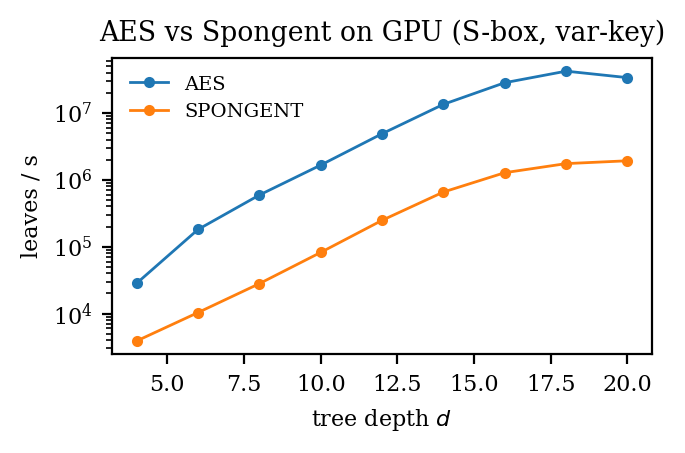

AES-128 vs Spongent-π[176] on NVIDIA RTX 3060
UCSD ECE 268 Hardware Security · Final Project · Spring 2026
Member 1 · Member 2 · Member 3
Goldreich, Goldwasser, Micali (1986): build a PRF from any length-doubling PRG.
G : {0,1}^n → {0,1}^{2n}, split as G(s) = (G_0(s), G_1(s))
For input x = x_1 x_2 … x_d :
F_K(x) = G_{x_d}( G_{x_{d-1}}( … G_{x_2}( G_{x_1}(K) ) … ) )
Equivalently: walk the binary tree of depth $d$ from root $K$, choosing the $x_i$-th child at level $i$.
Full expansion: $2^{d+1} - 1$ nodes × 16 B. At $d{=}24$ that's 512 MB.
Variable-key: G(s) = AES_s(0) || AES_s(1)
(s is reinterpreted as a fresh AES key per node)
Fixed-key: G(s) = AES_K(s) || AES_K(s ⊕ 0x01)
(public K, round keys precomputed once)
_mm_aesenc_si128, _mm_aesenclast_si128)Bogdanov et al., CHES 2011 — lightweight hash designed for hardware area.
G(s) = π[176](s || 0x00)[0..15] || π[176](s || 0x01)[0..15]
π[176]: 176-bit state, 80 rounds, each round:
1. AddCounter (7-bit LFSR XOR at fixed positions)
2. SBoxLayer (PRESENT 4-bit S-box per nibble)
3. pLayer (j → (j × 44) mod 175)
No CPU hardware support; everything bit-level.
ggm-tree/
├── src/ggm/
│ ├── tree.py # GGMTree public API
│ ├── host.py # PyCUDA loader + launchers
│ ├── ctypes_iface.py # ctypes → libggmcpu.so
│ ├── kernels/*.cu # AES + Spongent CUDA
│ └── cpu/ # C reference + AES-NI + OpenMP
├── bench/ # measurement + grid driver + plots
├── tests/ # 35 pytest cells, CPU + GPU
└── report/, slides/ # IEEE LaTeX + HTML decks
| Resource | Location | Size |
|---|---|---|
| AES S-box | __constant__ | 256 B |
| AES T-tables | __shared__ per block | 4 KB |
| Round keys (var-key) | registers | 176 B/thread |
| Round keys (fixed-key) | __constant__ | 176 B |
| Spongent state | registers | 22 B/thread |
| Tree storage | global | up to 256 MB |
BFS layout: parent at index $i$, children at $2i+1, 2i+2$ — naturally coalesced (16 B × 32 threads = 512 B contiguous reads/writes per warp).
For ℓ = 0 … d − 1:
total_threads = 2^ℓ
block = min(256, 2^ℓ)
kernel<<<ceil(2^ℓ / block), block>>>(tree, ℓ)
Each thread:
parent = tree[(2^ℓ - 1) + i]
(c0, c1) = G(parent)
tree[(2^(ℓ+1) - 1) + 2i] = c0
tree[(2^(ℓ+1) - 1) + 2i + 1] = c1
Trivially correct, exposes the "GPU underutilized at small ℓ" story.
All 35 pytest cells pass on the RTX 3060: 13 CPU + 4 Spongent + 18 GPU.
Spongent constants are paper-cross-validation TODO (we have internal consistency only).


Gap is consistent at ~25× across all depths.
Spongent's design optimizes for hardware area, not commodity-software throughput. 80 bit-level rounds >> 10 byte-level AES rounds.